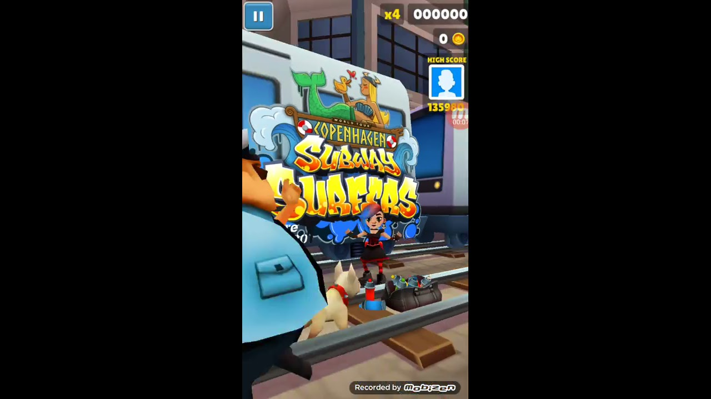
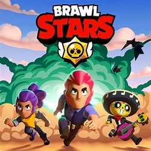

Subway Surfers was a game everyone played in their childhood. The gameplay was fun when you can grind coins or keys and try to get as high of a score as possible. The later it gets, the faster it gets which makes it challenging. There was also many cool skins and powerups.

Clash Royale was a card stratergy game that was fun as a kid. It was a game that required stratergy and thinking to create a strong deck and stratergy in game in order to win and climb trophies, and there was over 100 cards, which leads to a lot of creative gameplay.

#1: Brawl Stars
Brawl Stars was the best mobile game, as it was like Clash Royale, but with shooter aspects. There are a large variety of game modes, such as Gem Grab, Showdown, Heist, and Bounty. There are many characters, all with their different abilites and skills. The game also never got old, as there was always something to progress in the Trophy Road.